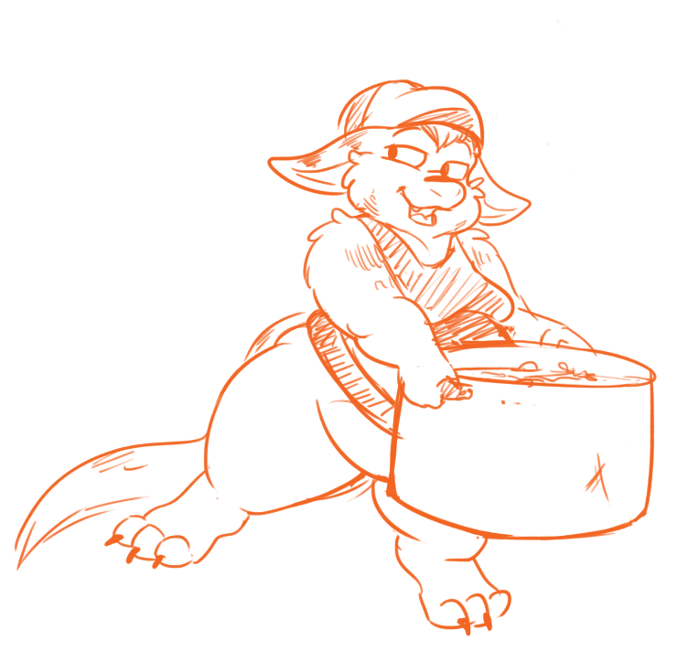

We've departed. It was done without pomp and ceremony as we were in some rush to catch up to schedule. I've been watching the crew in action and have so far been impressed by their speed and efficiency.
The ship has been a bustle of activity and tension for the first day as everyone are getting acclimated to their roles on the ship. But past the second day things seem to have finally relaxed around the place, training and experience is clearly visible and they've all adjusted quickly.
We are making good progress; favorable winds are sure to put us ahead of schedule. The ship is fast and the crew knows her well. I expect us to arrive at the Sea of fangs in about 15 days. Our rendeuvouz with the Wulfs is in 25 days. We should just about make it, even with some days of bad winds.
Tungs sudden demotion did not quite have as dramatic effect as I had first worried it would. In fact I've seen little trace of discontent or signs that his attitude were widespread among others. Or at the very least, none of my officers have reported anything amiss.
There is a tradition among new crew members to go through a little bit of hazing on a new ship. I've heard and seen mischief around the ship with new crew members forced to take on the oddest of jobs or wearing “non-standard” clothing. The Core crew on this ship hardly outnumber the new ones, but that does not seem to matter.
I've yet to tour all the corners of the ship and now would be good time to do this, the chaos of all the new faces aboard have also given me an idea though. If I wanted to, I could dress plainly and get a good look around disguised as a common sailor. Im still new enough that nearly none but my Officers should recognize me yet without Captains dress.
Whichever I choose, I've worked off my meal enough to move freely again. It could be a good oppertunity to get some first-hand accounts from the mood around the ship.
We've departed. It was done without pomp and ceremony as we were in some rush to catch up to schedule. I've been watching the crew in action and have so far been impressed by their speed and efficiency.
The ship has been a bustle of activity and tension for the first day as everyone are getting acclimated to their roles on the ship. But past the second day things seem to have finally relaxed around the place, training and experience is clearly visible and they've all adjusted quickly.
We are making good progress; favorable winds are sure to put us ahead of schedule. The ship is fast and the crew knows her well. I expect us to arrive at the Sea of fangs in about 15 days. Our rendeuvouz with the Wulfs is in 25 days. We should just about make it, even with some days of bad winds.
Tungs animosity from our innitial meeting has so far not manifested in any other way. Arn made brief assurances there would be no further problems, but that remains to be seen.
There is a tradition among new crew members to go through a little bit of hazing on a new ship. I've heard and seen mischief around the ship with new crew members forced to take on the oddest of jobs or wearing “non-standard” clothing. The Core crew on this ship hardly outnumber the new ones, but that does not seem to matter.
I've yet to tour all the corners of the ship and now would be good time to do this, the chaos of all the new faces aboard have also given me an idea though. If I wanted to, I could dress plainly and get a good look around disguised as a common sailor. Im still new enough that nearly none but my Officers should recognize me yet without Captains dress.
It could be a good oppertunity to get some first-hand accounts from the mood around the ship.
I've decided to take a look around the interior ship I will be captaining in Captains dress. It might be a good idea to be seen around the ship and familiarize my way around the place. Many captains stay cooped up in the rear parts of their ships around their quarters and planning rooms. While that distance and limited fraternization is said to be helpful toward an authoritative air to the position, I think its good for a new crew to at least see their new captain among them.
I arrive on deck and consider where to go.
I remove my Captains garments, sword, cape, hat and don a plain white sailors shirt I keep in my trunk. Its not really much of a disguise, anyone who knows me will immediately see that its me. But the point is that very few do know me yet. They might have seen me at a distance during the line up before we set sail, but with so many new faces, I shouldn't get more then a glance or two.
I take the central stairs down below deck toward the living quarters of most of the crew.
Sailors here live in in small sections of work-groups, divided by thin walls. Its a bit like miniature dormitories, they sleep and work together for their shifts, curled together on wide mattresses or smaller bolt-holes for couples or those who desire privacy.
Awes may trade what shifts they belong to with others and during the first days there might be a lot of that as sailors. Its up to First-mate Arn and Officer Mirr to keep track of them all.
Its a busy bustle of movement and activity down there, being slightly overcrowded as we are its bound to be.
Most stop what they're doing and stand up straight to give me respectful nods as I pass. As informal as I intended my visit to be, I sense none are willing to take too much chances around a new captain.
I take the central stairs down below deck toward the living quarters of most of the crew.
Sailors here live in in small sections of work-groups, divided by thin walls. Its a bit like miniature dormitories, they sleep and work together for their shifts, curled together on wide mattresses or smaller bolt-holes for couples or those who desire privacy.
Awes may trade what shifts they belong to with others and during the first days there might be a lot of that as sailors. Its up to First-mate Arn and Officer Mirr to keep track of them all.
Its a busy bustle of movement and activity down there, being slightly overcrowded as we are its bound to be. Awes were busy getting to know eachother with all the influx of new crew, there was a generally jovial almost festive atmosphere about.
I'm just one among them as I move through the groups of Awes, few take notice of me until suddenly one very woolly-furred Awe pins me to a wall with a gentle push.
“You're one of the new ones around here aren't you?” There's a overly mischievous smile on her face.
“Liar, liar fur on fire!” She laughs mirthfully. Something tells me she's had one too many rations of “drink”. “Look I getcha, you're trying to avoid all the hazings, probably endured one too many pranks already! But we all went through it, so you're not getting away!”
Before I can reply, the sailor is calling for others attention.
“We've got one thats trying to get away here! I think she needs some soup!”
Before I can raise objection or protest, I'm suddenly hoisted up off my feet by several paws and carried on shoulders.
“Soup soup soup!” chanted the crowd and carried me into the mess-hall.
Ropes were produced from somewhere and with startling efficiency I soon found myself tied with my back to one of the ceiling beams, dangling above the dinner table.
I was then spoon-fed cold soup by another blind-folded Awe and the subject to much laughter and misplaced spoonfuls of soup before I was left dangle up there and watch others come and go to eat as their shifts changed.
I suppose I had been kind of asking for this as I ventured out in plain sailors uniform. I did not have to dangle above the dinner table for long.
Officer Tick happened by for lunch and sat below me, but did a double take upon seeing me up there.
After staring dumbfounded a while he subtly had me taken down without breaking my cover.
“Ah! Not even trying to hide are you! You're as brave as you are cute, I respect that.” She grinned widely. “But you are not getting away! Unless...!”
“Unless what?”
“Unless you let me protect you cutie! Get in my pouch, i'll keep you safe, alright?”
I had seen some of the hazing rituals around the ship. They were all rather inappropriate for the Captain of the ship to go through would it be known it was me.
I suppose I should have expected I'd be cornered this way one way or another in my “disguise”.
The pouch of a fellow Awe, although a rather personal act, was a small price to pay if I could get out of some public humiliation.
“For how long?” I found myself asking. The Woolly Awe giggled and with her arm around my shoulder pulled me away to what I assume was her share of the living space.
“Until our next shift, yeah? It should have blown over by then.” She chuckled smugly.
With a paw holding the lip of her pouch open invitingly I could but shrug and dive on in.
It took some manhandling and effort, not all pouches are created equal and adults are not quite as accommodating as a Pouch-Matrons spacious confines.
But the Woolly Awe, who's name I never seemed to catch, purred and managed with only my anonymous feet and tail left dangling out.
I was glad my overly warm pocket of refuge hid my blush and slight indignation.
I seemed to have dozed off briefly when I'm awoken by the voice of Arn talking from a very close by. I feel a brief surge of embarrassment but realize quickly he's not talking to me or even know I'm there.
“Alright, work crew 4 is standing in for crew 6 tonight. Standard extra rations and time compensation apply.”
“Do crew 6 ever get work?” Complained a voice.
“None of that lip Sailor. You have your orders.” His voice faded. After a while I felt a firm pat upon my back.
“Well friend, this is where we part ways. Cant climb the sails with you about.”
“No? Aw, you disappoint me.”
Before I can reply, the sailor is calling for others attention.
“We've got one thats trying to get away here! I think she needs some soup!”
Before I can raise objection or protest, im suddenly hoisted up off my feet by several paws and carried on shoulders.
“Soup soup soup!” chanted the crowd and carried me into the mess-hall.
Ropes were produced from somewhere and with startling efficiency I soon found myself tied with my back to one of the ceiling beams, dangling above the dinner table.
I was then spoon-fed cold soup by another blind-folded Awe and the subject to much laughter and misplaced spoonfuls of soup before I was left dangle up there and watch others come and go to eat as their shifts changed.
I suppose I had been kind of asking for this as I ventured out in plain sailors uniform. I did not have to dangle above the dinner table for long.
Officer Tick happened by for lunch and sat below me, but did a double take upon seeing me up there.
After staring dumbfounded a while he subtly had me taken down without breaking my cover.
“Would you believe me if I said I was the captain?” I saw little choice but to reveal myself to get out of this situation and potential public embarrassment.
“Hah, good one. I've seen the captain, she's a cute one too, you may... you may be alike.. but...” She turned her head to look at me from left and right. I only nodded at her as realization seemed to hit home. Luckily she had enough wits about her to see the obvious once it was pointed out to her.
“Matrons breath, you ARE the captain!” The sailor stepped back quickly, no longer pinning me to the wall.
“No harm done. Relax.” I reassured her. But whatever casual coy playfulness that had been in the air dissipated quickly.
The word seemed to spread quickly through the quarters. No one bothered me or pretended to see me any longer.
The galley is situated toward the front of the ship. My journey there takes me past the lower mess hall where crew gather for their meals or other off-duty activity, its not a spacious place and fits tables for a quarter of the crew at a time. As I arrive its dinner hour and the place is so busy and loud I'm only noticed by those in the immediate presence that I have to squeeze past. There's laughter and distraction at a sailors predicament tied to the roof that another is trying to feed broth to with a spoon. I leave them to their merriment and enter the Kitchens.
A plump yellow Wulf is busily tending to his duties as ships chef here. Im slightly taken aback in surprise by the thought of having a Wulf as ships chef. So many years spent on the east sea protecting against their ambitious kind will always put me on slight edge around them.
I spot some delicate tarts cooling down on a table. They must be for the officers desert later, the sweet smell of them is too tempting and find myself sampling one in advance. Its delicious.
The Chef seems to pause briefly in his busy tending of so many boiling pots and kettles to give me a look over.
“Can I help you.. er.. captain? Are you hungry?” While he talks his tail stirs another pot behind him with a firm grip around a ladle.
“No, thank you. Just having a look around.” I nod briefly. Even as captain it feels like I'm intruding in someone else's busy domain.
“Well, Zat is the name. I see you enjoy the pastries, I was going to send them up to your dessert later. If you ever need anything Captain then just send word.” It was as polite an dismissal as any, he was clearly busy. The chef no doubt does not work alone down here. I did my own share of kitchen duty prep-work as a young sailor.
The galley is situated toward the front of the ship. My journey there takes me past the lower mess hall where crew gather for their meals or other off-duty activity, its not a spacious place and fits tables for a quarter of the crew at a time. I pass it by unnoticed to the kitchens.
A plump yellow Wulf is busily tending to his duties as ships chef here. I'm slightly taken aback in surprise by the thought of having a Wulf as ships chef. So many years spent on the east sea protecting against their ambitious kind will always put me on slight edge around them.
I spot some delicate tarts cooling down on a table. They must be for the officers desert later, the sweet smell of them is too tempting and find myself sampling one in advance. Its delicious.
A yellow striped tail suddenly wraps firmly around my paw.
“Hey now thief! What have I kept telling you people! Those are for the Captain and the officers!” The chef stares me down angrily. I seem to have forgotten my 'disguise'.
I decide to maintain my disguise and humble myself to the Chef. He had a right to be angry from his point of view after all.
“I'm sorry Chef. I could not help myself, the scent of them drove me to forget myself.” I apologized as genuinely as I could.
This seemed to placate the Wulf and his grip around my paw relaxed and let go.
“I can sympathize but don't enter my kitchen if you cant help yourself! And tell the others that next time Zat sees greedy paws in his kitchen he might not be able to help himself to some large appetizers of his own! Now scram!” The Wulf shooed me out and swung his ladle in my general direction.
I left the kitchen in haste.
Before this got out of hand, it was best to reveal to the poor Chef what was what.
“Sorry, but I am the Captain! Now let me go Chef.”
“Is that so!?” Zat snorted, clearly unconvinced. “In that case I am the Admiral! Admiral Zat!” The tail yanked me forward suddenly and surprisingly, the plump Wulf had quite some strength in him. He caught me in a tight bear-hug.
“I warned you people to keep your greedy paws out of my kitchen. Until I get an apology out of you, you'll be under arrest and serve as an example!“ The chef growled and with a sudden yawn shoved my head into his maw.
The suddenness of it caught my by surprise and I cant but yelp and grunt as the Wulfs blue-colored mouth and tongue wetly slurped around my face and swallowed, dragging me down into darkness and tightness.
Wulfs are gluttonous consumers, I knew that from experience and the Chef, with his portly frame was no stranger to ferociously slurping down a huge meal. Struggle and kick as I might, I could do little stop my descent down the Wulf-chefs gullet and belly.
I cried out in the hot encompassing confines of the Wulfs gut, but I knew none would be able to hear it. I felt him slurp and swallow around my foot-paws before sending the rest of me down to curl up tightly.
Had I survived 10 years in the East-Sea fighting off hungry Wulf pirates only to humiliatingly end up as a meal to my own ship's cook?
A loud belch rumbled around me and I felt movement. Perhaps the chef went back to cooking.
It struck me that no one would know where I ended up if Zat decided to... 'keep' me. I had told no one where I was going and been incognito. I swallow my pride and cry out in an attempt to apologize and appease my devourer.
“Im sorry Chef, Y-you've taught me valuable lesson! Let me.. let me learn from it!”
Only silence met me and I found myself uncomfortably struggling for an upright position, unsuccessfully.
“You are in the right here! I should not have stolen from you. Forgive me Zat!” Shame burns me to plead to a Wulf like this. But under the circumstances it the better option to other kinds of burning.
“Very well.” A voice called out from around and above. “You seem remorseful enough. But if I see you in my kitchen again, no matter what, I'll assume you're down here to join my figure! Is that clear!?”
“Very Clear...” I reply, realizing I probably could never risk enter the kitchen again, even in Captains dress.
Moments later, wet and slimy, im heaved back up into an empty washing basin for dishes. Zat stares at me a while and then huffs and returns to his cooking that he's now fallen behind on.
Shamefaced and humbled I dry myself briefly before departing in a hurry.
“Zat! This is a grave mistake! I am really the captain! Let me out right this moment!” I demand from within the Wulfs gut, pushing and shoving unsuccessfully to try to get myself upright.
Im met only with silence from around me. It struck me that no one would know where I ended up if Zat decided to... 'keep' me. I had told no one where I was going and been incognito.
“Just release me right away and we'll forget about this matter. I.. understand you confused me with a common sailor! But any more of this is most unbecoming!” I put on with a firmer tone. Trying to put as much authority I could into my tone.
I sense movement from Zat as he moves around the kitchen, resuming his work. He was not listening, or caring.
“Are you hearing me!” I demanded.
“Shush in there meal!” Zat scolded and I felt a thud of his paw. “I dont know whats worse, having someone so unremorseful of their thieving ways or so blatantly lying about impersonating our good captain!”
“Im not lying!” I growled and kicked.
“That might be even worse then! Say you really were the captain. Here I've gone and accidentally eaten the captain herself, no good would come out of that!” Zat explained.
“Thats right!” I kicked outwards and were rewarded with a low rumbling gurgle all around me.
“Unless no one found out!” Zat chuckled and belched loudly once more, tightening slick and hot chamber.
I blink and feel suddenly very weary. There was an edge of finality to that tone and a paw patted me firmly from outside, as if to comfort me about the fate I was now to suffer. The Wulf cook was going to add me to his portly frame and none would be the wiser. I gave another hard shove, but already space was further tightening and muscles slowly churning.
Dinner was served on schedule for the Officers hours later. They were all offered delicious tarts. It looked like the Cook had recently binged on quite a few of his own. He moved sluggishly rubbed at his profound gut contently. But no one really questioned the reality of an unusually fat ships-chef.
No one did find out where the captain disappeared to. It was one of those mysteries of the sea and a well debated tale aboard 'The Attentive'.
Near the lowest levels of the ship, next to the storage rooms are the Raptorian pens and their attendants quarters.
As placid as they're trained to be, Raptorians are large and need their own space to be kept content on their long journeys at sea.
The scent of them is distinct down here and as I arrive a few squires, the Raptorian attendants, approach and welcome me. Im struck by how much more silent it is around here then at the rest of the ship.
“Welcome Captain! We were not expecting you.” The speaking squire adjusts her gray vest to look more proper.
“Worry not, just familiarizing myself around the ship. This is no inspection.” I reassure her.
“Well, let me welcome you to the pens. I am Squire Brit this here is Squire Midlotta. Shall we show you around?” They seemed relaxed and confident, I suppose working with Raptorians you had to be.
“Sure, i've commanded a ship with Raptorians before but not one with this many, nor with trained Raptorian warriors before.” I look around the pens casually. Each Raptorian have their own quiet nook, walled stalls along the walls with soft hay. I knew from experience that hierarchy was important among them, but to reduce possible conflict they all have similar sized pens and their own place of refuge. The two squires took me around.
“The pens are built to impact the rest of the ship as little as possible and vice versa. We have our own armory right here and the dried meat they primarily consume is in the closest storage room. There is also quick access here to the main stairwell up to the top of the deck.” We walked around the lower holds, a few Raptorians came in to eye me curiously but remained silent. Besides their pack-master Evok, I was their leader. They wanted to size me up.
One of them ended up standing in my way, unmoving mid tour. Squire Brit, busily leading the way did not notice.
Near the lowest levels of the ship, next to the storage rooms are the Raptorian pens and their attendants quarters.
As placid as they're trained to be, Raptorians are large and need their own space to be kept content on their long journeys at sea.
The scent of them is distinct down here and as I arrive a few squires, the Raptorian attendants with their grey vests, turn their heads at me.
“Dont wonder around down here too much friend.”
“Why not?” I ask, genuinely curious.
“You're new arent you? Raptorians don't recognize you. They get testy.”
I nod in acknowledgment and they move on to their other duties. Raptorians have quite a lot of space dedicated to them down here. There's more to see up ahead. They didn't outright forbid me entry.
I stare up at the Raptorians eyes unflinchingly. They stared back in expressionless silence.
The staring contest might have gone on longer when Squire Brit interjected with an apologetic tone and stammer. She pushed at the Raptorian, rebuking him. She could never have forcibly moved him, but he stepped to where she pushed obediently.
“Klo! Get out of the way, thats the Captain you numb-skull!”
“Apology, Captain.” The Raptorian rumbled deeply in a throaty voice, seeming to smirk a little and moved back to a knot of other Raptorians, joining in their conversations.
“Im sorry again captain, they've not been fed yet today and tend to become a little... uh.. slow-witted when hungry.” The other Squire, Midlotta, apologized.
Not wishing to impose further and having seen what I came to see, I thank them and move on.
I stare up at the Raptorians eyes unflinchingly. They stared back in expressionless silence. At the most he cocked his head slightly, as if curious or bemused... or angry. It was hard to tell.
I slip on deeper into the Raptorian section of the ship and look around the pens casually. Each Raptorian have their own quiet nook, walled stalls along the walls with soft hay. I knew from experience that hierarchy was important among them, but to reduce possible conflict they all have similar sized pens and their own place of refuge.
They had their own armory and food storage room attached. There main stairwell also ended on this level not far from here so they could make quick ascent to the main deck.
As I moved around the Raptorians around the area eyed me with mostly disinterest until one blocked my path as I was inspecting one of the pens.
He loomed over me and stared in silence.
I dont even pause my stride much. I put a firm paw to his chest and push as I move to keep up with the Squire. With his size and weight he could have been as immovable as the main mast if he wanted to, but curiously enough the Raptorian shifts out of the way wit the push, not challenging me.
I don't even spare him a glance as I politely follow Squire Brits explanation of a squires duties and their own separate living areas close to the pens.
“We are always close at hand to see to their needs and make sure they are in shape to whatever heavy duty needs you require of them Captain.”
Not wishing to impose further and having seen what I came to see, I thank them and move on.
I put a firm paw to his chest and push. With his size and weight he could have been as immovable as the main mast if he wanted to and he clearly did not want to budge.
I give the testy Raptorian an annoyed glance and clear my throat loudly in a “Ahem”. He does not budge.
Squire Brit is quick on her feet however, she pushed at the Raptorian, rebuking him. She could never have forcibly moved him, but he stepped to where she pushed obediently.
“Klo! Get out of the way, thats the Captain you numb-skull!”
The Raptorian seemed to smirk a little and moved back to a knot of other Raptorians, joining in their quiet conversations.
“Im sorry again captain, they've not been fed yet today and tend to become a little... uh.. slow-witted when hungry.” The other Squire, Midlotta, apologized.
Not wishing to impose further and having seen what I came to see, I thank them and move on.
I keep staring down the big Raptorian in several long seconds until the finaly the Raptorian lets out a breath through his nostrils and looks away. I take it as my que and squeeze past him to walk out of there.
No more Raptorians challenge my passing, but there is little else to see around here.
“What do you want big fellow?” I inquire the big Raptorian casually.
He seems to stare at my a little while longer before replying ominously.
“I wish to eat.”
I start to loose patience with this upstart Raptorian. Testy indeed.
“Then go eat something and let me pass.” I grunt irritably.
The raptorian seems to raise his brow and then nod.
“Okay.”
Then he casually closed his mouth around my head and shoulders, choosing me as his meal through his odd Raptorian logic.
I let out a muffled shout of protest. But its quickly quelled as the large Raptorian tosses his head back in heavy gulp and plunge me halfway down his jaws with ease.
Im hopelessly out-matched in strength and any hope I might have had that he was merely trying to scare me disappear down his throat along with my body as he tilts his head back and swallows me whole with a few easy head-tossing gulps.
I twist down his thick neck and find myself crammed into the dark pit of his stomach deep down his body. The chamber hold me firmly, I cant feel myself make any impact or bulge as I struggle and shout in angry protest. I bet I hardly make a very sizable lump on the Raptorians rounded midsection , especially as he enters his pen and lays down on top of me, squashing me even further.
The Raptorian knew when the Squires or Alpha were not looking. The others near his pen would not tattle on him, only be envious of the opportunity he had managed to seize.
The low digestive grumbles from his gut did not over-voice the loud snores of the sleeping Raptorian when the Squires came to check up on them. None in the Raptorian pens would testify to have seen the disappeared Captain come this way.
At the lowest levels of the ship, all along its bottom, are the storage areas. Though there is still technically one level below for heavy ballast this deep in the belly of the ship.
Its not as busy here as elsewhere on the ship, not everyone are allowed to loiter around here without permission. But there are still crew moving around the tied up crates and barrels standing shoulder to shoulder nearly all the way to the roof. We are at max capacity and will not have any problems with provisions on this trip. That does not mean we can overindulge as the idea is that a lot of this cargo are to help resupply our fleet.
As I enter one of the storage rooms from another through a smaller side-entrance I seem to have walked in on a minor gathering of Awes. They all look up startled and frozen at my sudden appearance, caught in the act of what seems to be a card game.
“Uh... Captain!” One of them salutes with the wrong arm, other one holding a paw-full of cards behind her back. She was one of the Low-officers judging by her insignia on her right shoulder.
“Wrong arm officer.” I chide her, unable to fully hide my bemusement.
“R-right.” They stammered and obeyed, now holding a deck of cards against their chest, flushing profusely.
“Carry on.” I smirk and decide to move on. Games of chance are not illegal, as long as its not on duty and they didnt seem to be gambling for any visible currency. But its not my intention to hound the crew at this moment. I imagine the collective sigh of relief that swept through the room after my departure was lesson enough.
At the lowest levels of the ship, all along its bottom, are the storage areas. Though there is still technically one level below for heavy ballast this deep in the belly of the ship.
Its not as busy here as elsewhere on the ship, not everyone are allowed to loiter around here without permission. But there are still crew moving around the tied up crates and barrels standing shoulder to shoulder nearly all the way to the roof. We are at max capacity and will not have any problems with provisions on this trip. That does not mean we can overindulge as the idea is that a lot of this cargo are to help resupply our fleet.
I hear several voices from one of the storage rooms and slip inside, curious to see whats going on.
An Awe at the door watches me enter and give a shrug.
Inside is what looks like a small gambling setup. Several crates serve as makeshift tables for circles of Awes playing cards. Games of chance are not exactly illegal on the ship, but gambling for money and “favors” was always frowned upon by the Admiralty code.
“New here? Wish to join a table?” A young looking ginger Awe looks up at me.
I smile and politely shake my head, deciding its best not to speak out loud and call attention upon myself. Someone might still put my voice and face together.
The Awe shrugs and moves on. I linger a while and listen to conversation around the tables. The place is not crowded, but I'm not the only curious onlooker. One line of conversation did strike my interest.
“So who's the head bet-taker of ring now that Tung bit the fluff?” A sailor asked at one of the tables.
“Arn I guess, until he delegates. But he was always kinda in-charge of it.” A low-officer with single emblem on his shoulder grunted, her nose in her cards.
“New Cap seems like a tough tangle. She might keep him busy.”
“Yeah, Arn, hard at work.” The Awe laughed and they all joined in jovially.
I moved on from the room as conversation shifted to lewder subjects.
“You hear what Tung said to the new Cap?” A sailor asked at a table while dealing cards.
“Did, seemed foolish to me.” A low-officer with single emblem on his shoulder grunted, her nose in her cards.
“Maybe Arn put him up to it.”
“Seems even more foolish to me. If he wanted to be captain he could've.”
Unfortunately the conversation died out as the card game intensified.